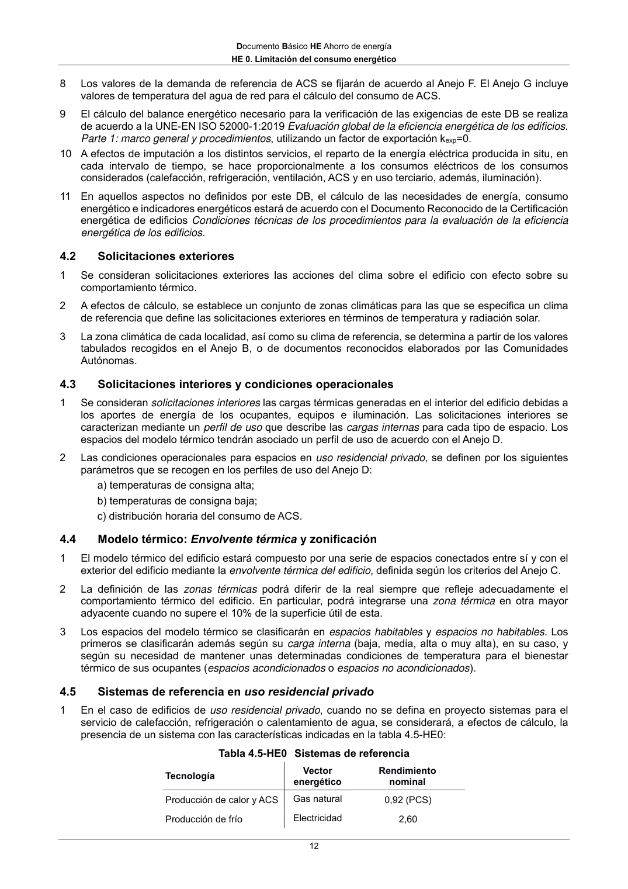

DB-HE Ahorro de energía · edición 2022-06-14 · capa oficial
Documento DB-HE-oficial · SHA-256 del PDF 7f890bd495552e979f83f72c5f5c7b642e745911a8e343a7b5b73023ce0e1f05
Página física 12 de 56.
Copia fiel del PDF fuente · Fuente oficial
Ficha de la disposición en la fuente oficial
Formato: Texto de la página (Markdown)
Documento Básico HE Ahorro de energía HE 0. Limitación del consumo energético 12 8 Los valores de la demanda de referencia de ACS se fijarán de acuerdo al Anejo F. El Anejo G incluye valores de temperatura del agua de red para el cálculo del consumo de ACS. 9 El cálculo del balance energético necesario para la verificación de las exigencias de este DB se realiza de acuerdo a la UNE-EN ISO 52000-1:2019 Evaluación global de la eficiencia energética de los edificios. Parte 1: marco general y procedimientos, utilizando un factor de exportación kexp=0. 10 A efectos de imputación a los distintos servicios, el reparto de la energía eléctrica producida in situ, en cada intervalo de tiempo, se hace proporcionalmente a los consumos eléctricos de los consumos considerados (calefacción, refrigeración, ventilación, ACS y en uso terciario, además, iluminación). 11 En aquellos aspectos no definidos por este DB, el cálculo de las necesidades de energía, consumo energético e indicadores energéticos estará de acuerdo con el Documento Reconocido de la Certificación energética de edificios Condiciones técnicas de los procedimientos para la evaluación de la eficiencia energética de los edificios. 4.2 Solicitaciones exteriores 1 Se consideran solicitaciones exteriores las acciones del clima sobre el edificio con efecto sobre su comportamiento térmico. 2 A efectos de cálculo, se establece un conjunto de zonas climáticas para las que se especifica un clima de referencia que define las solicitaciones exteriores en términos de temperatura y radiación solar. 3 La zona climática de cada localidad, así como su clima de referencia, se determina a partir de los valores tabulados recogidos en el Anejo B, o de documentos reconocidos elaborados por las Comunidades Autónomas. 4.3 Solicitaciones interiores y condiciones operacionales 1 Se consideran solicitaciones interiores las cargas térmicas generadas en el interior del edificio debidas a los aportes de energía de los ocupantes, equipos e iluminación. Las solicitaciones interiores se caracterizan mediante un perfil de uso que describe las cargas internas para cada tipo de espacio. Los espacios del modelo térmico tendrán asociado un perfil de uso de acuerdo con el Anejo D. 2 Las condiciones operacionales para espacios en uso residencial privado, se definen por los siguientes parámetros que se recogen en los perfiles de uso del Anejo D: a) temperaturas de consigna alta; b) temperaturas de consigna baja; c) distribución horaria del consumo de ACS. 4.4 Modelo térmico: Envolvente térmica y zonificación 1 El modelo térmico del edificio estará compuesto por una serie de espacios conectados entre sí y con el exterior del edificio mediante la envolvente térmica del edificio, definida según los criterios del Anejo C. 2 La definición de las zonas térmicas podrá diferir de la real siempre que refleje adecuadamente el comportamiento térmico del edificio. En particular, podrá integrarse una zona térmica en otra mayor adyacente cuando no supere el 10% de la superficie útil de esta. 3 Los espacios del modelo térmico se clasificarán en espacios habitables y espacios no habitables. Los primeros se clasificarán además según su carga interna (baja, media, alta o muy alta), en su caso, y según su necesidad de mantener unas determinadas condiciones de temperatura para el bienestar térmico de sus ocupantes (espacios acondicionados o espacios no acondicionados). 4.5 Sistemas de referencia en uso residencial privado 1 En el caso de edificios de uso residencial privado, cuando no se defina en proyecto sistemas para el servicio de calefacción, refrigeración o calentamiento de agua, se considerará, a efectos de cálculo, la presencia de un sistema con las características indicadas en la tabla 4.5-HE0: Tabla 4.5-HE0 Sistemas de referencia Tecnología Vector energético Rendimiento nominal Producción de calor y ACS Gas natural 0,92 (PCS) Producción de frío Electricidad 2,60

Datos candidatos: compruebe celdas y notas en el PDF.